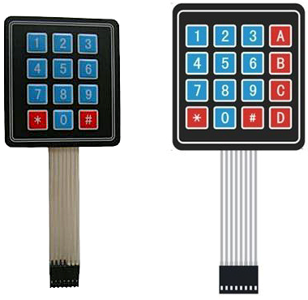
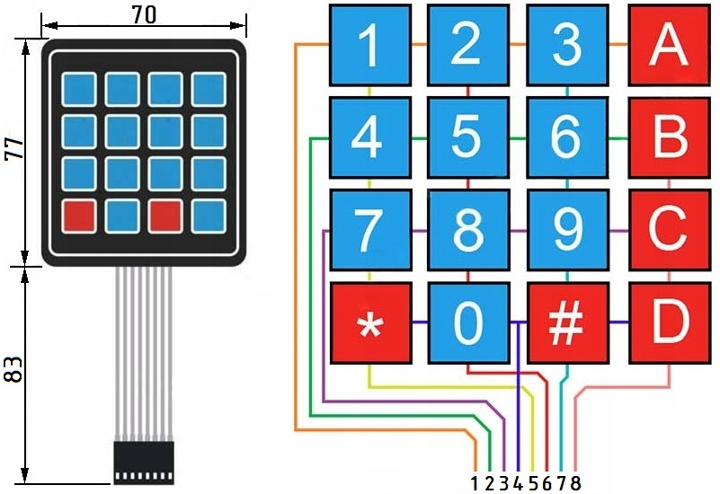
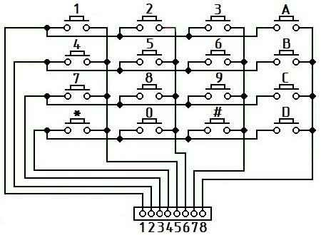
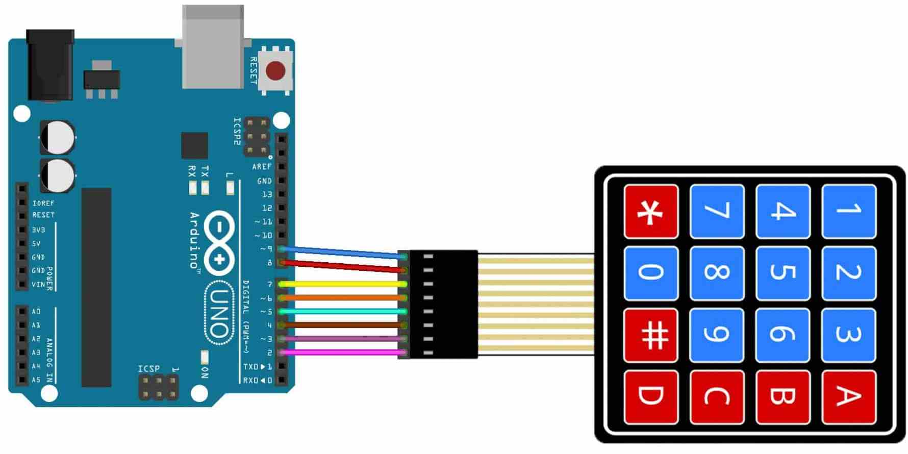

Подключение матричной клавиатуры
к Arduino
В проектах с Arduino часто требуется вводить пользовательскую информацию. Если возьмем обычную кнопку, нужно использовать стягивающий резистор, а также задействовать по одному контакту питания и «земли». А если необходимо подключить несколько кнопок? Тогда придется задействовать больше контактов и большее число проводов, да и без макетной платы уже не обойтись, плюс еще резисторы. Для таких случаев прекрасно подойдет простая матричная клавиатура. Такая клавиатура позволяет упростить подключение большего числа кнопок.

Рис. 1 - Матричная клавиатура
слева - 12-кнопочная (4×3), справа - 16-кнопочная (4×4)
Технические характеристики
- Рабочее напряжение: до 12 В.
- Максимальный ток: 100 мА.
- Сопротивление изоляции: >100 МОм.
- Сопротивление контактов: <200 Ом.
- Дребезг контактов: <5 мсек.
- Рабочая температура: от 0 до +70°C.
- Масса: 10 г.
Мембранные матричные клавиатуры являются экономичным решением. Они довольно тонкие и могут легко монтироваться. Клавиатура с 16 кнопками имеет четыре столбца и четыре строки.

Рис. 2 - Размеры и нумерация выводов клавиатуры 4×4

Рис. 3 - Порядок расположения строк и столбцов внутри клавиатуры 4×4
При нажатии этой кнопки один из выходов строки будет выведен на один из выходов столбца. Из этой информации Arduino может определить, какая кнопка была нажата. Например, при нажатии клавиши 1 столбец 1 и строка 1 замыкаются. Arduino обнаружит это, и в программе будет индицирована цифра 1. Подключение платы Arduino UNO и матричной клавиатуры показана на рис. 4

Рис. 4 - Подключение платы Arduino UNO и матричной клавиатуры
Для удобства работы с матричной клавиатурой необходимо установить готовую библиотеку Keypad.
Cкетч 1. Взаимодействие Arduino и матричной клавиатуры
Таблица 1
| Клавиатура 4*4 | Arduino UNO |
|---|---|
| Контакт 1 | D11 |
| Контакт 2 | D10 |
| Контакт 3 | D9 |
| Контакт 4 | D8 |
| Контакт 5 | D7 |
| Контакт 6 | D6 |
| Контакт 7 | D5 |
| Контакт 8 | D4 |
Контакты к которым подключаем клавиатуру, могут быть перенастроены на любые другие.
#include <Keypad.h> // Подключаем библиотеку Keypad.h const byte ROWS = 4; //число строк клавиатуры const byte COLS = 4; //число столбцов клавиатуры // задаем названия клавиш в массиве char keys[ROWS][COLS] = { {'1','2','3','A'}, {'4','5','6','B'}, {'7','8','9','C'}, {'*','0','#','D'} }; byte rowPins[ROWS] = {11,10, 9, 8}; //задаем выводы для строк byte colPins[COLS] = {7, 6, 5, 4}; // задаем выводы для столбцов Keypad keypad = Keypad(makeKeymap(keys), rowPins, colPins, ROWS, COLS); void setup() { Serial.begin(9600); } void loop() { char key = keypad.getKey(); if (key){ Serial.println(key); //Передаем символ нажатой клавиши в монитор порта } }
В первой строках кода подключаем библиотеку и указываем сколько строк и столбцов у клавиатуры. Далее символы клавиш располагаем в двумерном массиве keys, чтобы было удобнее работать.
В массивах rowPins и colPins указываем к каким выводам на плате подключаем управление строками и столбцами. Выводы 11, 10, 9 и 8 подключаются к рядам, 7, 6, 5 и 4 - к столбцам.
Оператор Keypad keypad = Keypad(makeKeymap(keys), rowPins, colPins, ROWS, COLS); создает объект Keypad, который использует выводы заданные в массиве rowPins как выводы строк и выводы заданные в массиве colPins как выводы столбцов.
В функции void setup указываем скорость последовательного соединения с монитором порта 9600 бод. Функция нужна только для подачи питания на модули.
В функции loid loop функция getKey() определяет кнопку, которая нажата, если таковая имеется и переменная key типа char получает символ нажатой клавиши. Если нажатие зафиксировано, то происходит вывод символа в монитор порта с помощью функции Serial Print. В скобках нужно указывать, какую переменную выводим в порт.
Если все сделано правильно, в мониторе порта получим символ, на который нажимали.
Источники
digitrode.ru - Подключаем матричную клавиатуру к Arduino
edurobots.ru - Arduino для начинающих. Урок 10. Подключение матричной клавиатуры и интересные схемы